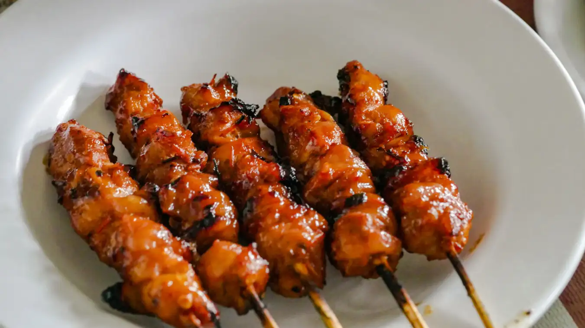

Terletak di Jalan Sidomukti, Tiyosan, Sleman, Yogyakarta, adalah destinasi kuliner yang tak boleh dilewatkan bagi penggemar sate. Tempat ini tidak hanya populer di kalangan warga lokal, tetapi juga sering dikunjungi oleh turis domestik dan internasional. Jam operasional sate ratu adalah dari pukul 11.00 WIB hingga 21.00 WIB, dan buka setiap hari Senin hingga Sabtu. Kelebihan utama dari Sate Ratu adalah Sate Ayam Merahnya, yang terkenal dengan potongan dagingnya yang besar dan rasa yang lezat dan disajikan bersama potongan timun yang menyegarkan. Selain Sate Ayam Merah, mereka juga menyajikan varian lain seperti Sate Kanak dan Sate Kulit, memberikan variasi pilihan bagi para pengunjung. Harga hidangan di Sate Ratu tergolong terjangkau, mulai dari Rp 30.000-an, membuatnya menjadi pilihan yang baik bagi berbagai kalangan.
Kulineran Yogyakarta
Sate Ratu
Kopi Klotok

Warung Kopi Klotok yang terletak di Jalan Kaliurang Kilometer 16, Pakem, Kabupaten Sleman, Yogyakarta, menawarkan pengalaman ngopi yang unik dengan latar belakang pemandangan sawah yang asri. Konsep yang ditawarkan Warung Kopi Klotok sangat menarik bagi para pengunjung, terutama bagi mereka yang ingin menikmati waktu santai di tengah suasana alam yang tenang dan menyegarkan. Dari segi kuliner, Warung Kopi Klotok menyediakan berbagai pilihan makanan dan minuman dengan harga yang cukup terjangkau. Dengan budget sekitar Rp 100.000, dua orang pengunjung bisa menikmati berbagai hidangan yang tidak hanya lezat tetapi juga mengenyangkan. Jam operasionalnya sendiri dimulai dari pukul 07.00 hingga 21.30 sehingga tempat ini sangat sesuai untuk dikunjungi baik untuk sarapan, makan siang, ataupun makan malam.
Lumpia Sami Jaya

Lumpia Samijaya di Jalan Malioboro, Yogyakarta, merupakan salah satu destinasi kuliner yang patut dikunjungi oleh para pecinta lumpia. Meskipun hanya beroperasi dari sebuah lapak di trotoar, popularitasnya tidak pernah surut. Keunikan Lumpia Samijaya terletak pada isinya yang bukan menggunakan rebung, melainkan bengkuang, yang menawarkan rasa renyah dan lezat yang membuat siapa saja tergoda untuk mencobanya. Berlokasi strategis di Jalan Malioboro Nomor 18, Suryatmajan, Kecamatan Danurejan, tempat ini buka setiap hari dari jam 10.30 hingga 21.00. Dengan harga yang terjangkau, mulai dari Rp5.000 per buah, lumpia samijaya akan memberikan menawarkan pengalaman kuliner yang memuaskan tanpa harus menguras kantong.
Gudeg Sagan

Gudeg Sagan, yang berada di Jalan Prof. Dr. Herman Yohanes 53 Sagan, Yogyakarta, dikenal sebagai salah satu tempat makan gudeg yang menawarkan konsep lebih mewah dibandingkan kebanyakan tempat makan di Jogja. Tempat ini populer di kalangan mahasiswa UGM dan menjadi favorit bagi pengunjung dari luar kota karena gudegnya yang tidak terlalu manis dan teksturnya yang tidak terlalu kering. Dari segi harga, Gudeg Sagan menawarkan berbagai pilihan lauk seperti tempe, telur bebek, sayap ayam, paha ayam, kepala ayam, rempelo, dan uritan dengan rentang harga mulai dari Rp 12 ribu hingga Rp 39 ribu. Kelebihan lain dari Gudeg Sagan adalah sajian krecek dan kuah arehnya yang berwarna kecokelatan, menambah kekayaan rasa dari gudeg itu sendiri. Dengan kualitas dan kenyamanan yang ditawarkan, Gudeg Sagan mampu menjadi tempat yang layak untuk dikunjungi bagi pecinta kuliner di Yogyakarta.